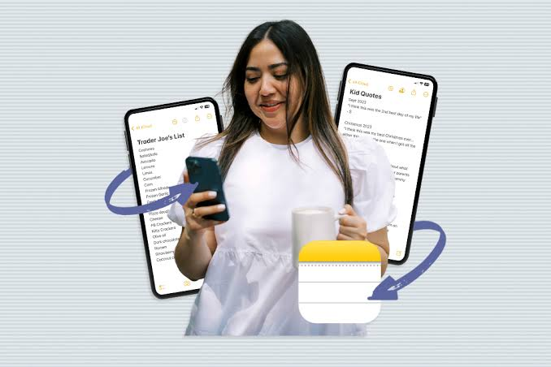

They arrive at a bad time
In the car, in the shower, as you fall asleep. Never at a desk with an app open.
ITI · Graduation Project 2026
Speak once. Order follows.

Team
Mina MeladMassoud
Mahmoud AhmedSayed Shoura
Fady AdelBotros Awdallah
Omar AbdullahDiab
Omar KhaledAbdelaziz
Mario MagdySaber Kaldas
Agenda
A hundred small things, all easy to forget.
Capture is solved. What comes after is not.
Every feature, shown running.
The model, the limits, and what is honest.
Pricing, and what is hard to copy.
The problem
Book the dentist. Renew the car insurance. Mum's birthday. The school form. Cancel the trial before it charges. The vet. The passport, which takes months. Each one is easy. Together they are heavy.
In the car, in the shower, as you fall asleep. Never at a desk with an app open.
Forgetting milk and forgetting insurance take the same space in your mind.
A calendar, a note, a drawer, an email, a memory. No single place holds them all.
A minute of typing for a two-second thought. So people do not. They try to remember.
A quiet, constant stress: you do not know what you have forgotten.
The Problem · Real Story
Everyone in the household tries to stay organized, but disconnected paper slips, phone notes, and sticky notes lead to constant friction.

The MotherHigh mental overload, scattered records, and inevitable forgotten tasks for the entire household.
The Solution · Product Definition
An intelligent assistant that turns scattered thoughts, official letters, and voice notes into trusted reminders before it’s too late.
Speak a sentence, scan an official letter, or type a note in English or Arabic. Zero manual form filling or complex setup.
Calculates real-world preparation windows—warning you a month early for car insurance, not on the day it expires.
Combines bills, appointments, renewals, and budgets across 6 life domains into one clear, conflict-free space.
Life admin autopilot (Kitto) isn't another heavy to-do list—it is a single system built to give you complete peace of mind.
Architecture · AI Agent Workflow Scenarios
The problem
None of these are difficult. All of them are easy to forget. And almost none of them involve paper.
Where today's tools stop
Each one is good at one part of the job, and then it stops.
Free, instant, always with you. The real competitor.
It works for years. Then it fails, without making a sound.
Todoist, Apple Reminders, a notes app. Now it is written down.
You still do all the thinking — including how early to be warned.
Perfect for the dentist at three o'clock.
Most admin is not an event. It is a period you must act inside.
The papers have to go somewhere, so they go here.
Papers with deadlines, kept somewhere with none. That is how things get missed.
Where today's tools stop
This one deserves respect. Siri and Gemini understand normal speech now. Gemini can think, hold a conversation and save tasks. ChatGPT sets reminders too. It is not a toy, and it solved the hardest part of the old problem.
You say
"Remind me to call the bank on Tuesday at five."
↓
You get
One alarm. At exactly the moment you named.
It did what you said. It has no opinion about what you meant.
It never asked whether that moment was any use. It did not read the letter the date came from. It does not hold the other fifty things you have to do, so it cannot see that two of them collide. By next month it has forgotten the conversation.
Where today's tools stop
Getting words into a system is the easy part, and every assistant now does it well. The hard part is everything after: knowing how early to warn you, reading the paper the date came from, keeping everything you have to do in one place, noticing when two of them collide, and being honest when it is not sure.
That is where Life admin autopilot (Kitto) lives.
Where today's tools stop
Every one of them is good at something. None of them opens the document the date is written in, and none of them holds the whole picture.
| What it does | To-do apps Todoist, Apple Reminders | Assistants Siri, Gemini, ChatGPT | Life admin autopilot (Kitto) This project |
|---|---|---|---|
| Makes a reminder from your voice | Some | Yes | Yes |
| Knows how early to warn you | No | No | Yes |
| Reads your bills and letters | No | Reads only | Yes |
| Finds a conflict before you save | No | No | Yes |
| Shows the page a date came from | No | No | Yes |
| Asks when it is not sure | No | No | Yes |
| Free, already on your phone | Yes | Yes | No |
The last row is the price we pay, and we say it out loud. Life admin autopilot (Kitto) has to be worth opening, and it costs about $3 of model calls per active user each month — a measured figure, not an estimate. We accept that because rows two to six are where the real work is.
Where today's tools stop
Passport needs 6 months warning. Milk needs none.
Scans your paper documents into actual calendar alarms.
Holds all tasks together to spot calendar clashes & costs.
Shows the exact page & line it read the date from.
A 5-stage warning schedule — not just one alarm.
The product
At least one of them fits the moment you actually remember something.
The main way. Speak one normal sentence and save. You never wait for it to think.
For the part that arrives on paper. A bill, a letter, a policy, a form, a PDF.
Ask what is due. Move things. Add things. Question anything you already saved.
The ordinary form. Nothing forces you to use the AI at all.
School terms, collection days, fixtures. Google Calendar and Tasks.
Whichever door it came through, the rest of the product treats it the same way.
The product · Capture
Tap the microphone, speak, save. You never watch a loading circle — the work happens after you have put the phone down, and a notification tells you it is done.
"Dentist Thursday at three, bring the referral letter, and buy bread."
The product · Capture
Reads words and visual layout together to auto-extract paper documents into calendar alarms.
The product · Capture
Type or speak. It can create, change, complete, delay, delete and search your jobs.
"What do I have on Thursday?"
"Move the dentist to next Tuesday."
"Did I finish the school form?"
Anything that deletes or changes a lot stops and waits for your confirmation. And when it answers using something you already saved, it shows you which item it read.
The product · Sorting
You read the area before you read the words Each area has its own signature colour and emoji badge, allowing instant visual recognition across your entire schedule.
The product · Reminders
Most life admin needs preparation time. Telling you your passport expires today is not a reminder. It is too late.
| Type of job | Warning |
|---|---|
| Passport renewal | 6 months |
| Driving licence | 2 months |
| Car registration, safety test | 6 weeks |
| Insurance, warranties, policies | 1 month |
| Subscriptions, memberships | 3 weeks |
| Taxes and official filings | 2 weeks |
| Bills, rent, electricity | 5 days |
| Appointments | 1 day |
Priority sets how often it reminds you. A low job gets one quiet reminder. An urgent one gets an early warning, a middle check, the day before, and the day itself. Late notice is handled: told six days before a job that wants a month, Life admin autopilot (Kitto) warns at three days rather than skipping. It never wakes you at night.
The product · Trust
Life admin autopilot (Kitto) weighs how bad it would be to get something wrong, and behaves differently for each answer.
"Buy bread" — nothing at risk It just saves it. No question, no notification.
"Call the bank" — a wrong guess costs nothing It picks a sensible time, and tells you which time it picked.
"Pay the fine" — a wrong guess is expensive It asks the question that decides the deadline: "When is it due?" Not "when do you want a reminder?"
Asking never loses your job. The thing you said is already saved. Only the reminder is held back, so it can never ring on an invented date. Three questions become one card, not three alerts.
The product · Reminders
Two kinds: a time conflict, where two things cannot both happen, and a duplicate, where you already have this job.
Checked before anything is saved Not discovered on the day. The check runs while you are still choosing.
It offers free times, not just a warning A complaint you cannot act on is just an obstacle.
The times fit the kind of job A film gets an evening. A dentist gets working hours. Offering 9am for a cinema trip reads as an assistant that was not listening.
The product · Every day
It refuses to show you everything, on purpose.
One thing, large, with Done and Not today Then three more at most, then "4 more in Matters".
Needs you The three things actually waiting on you: guesses to confirm, scans to review, jobs that have slipped.
A one-line brief for the day Written by Life admin autopilot (Kitto). Every number inside it is calculated from your real jobs, never invented by the model.
When the day is genuinely clear it says so and tells you to rest. A brand-new account gets different words entirely — "you are all caught up" means nothing to someone with nothing to catch up on.
The product · Every day
By time, area, priority, type, tags, date range.
Not only exact words — search by meaning and context.
Bulk actions with instant one-tap undo capability.
Each one tickable on its own.
Deleted jobs come back until you empty it.
Tap "4 overdue" and the list filters to those four.
The product · Money
Spending this month against last. A trend over 3, 6 or 12 months. A breakdown by area. What is still to pay, and what is late.
There is no exchange rate in the product, so a combined total could only be invented — and an invented number looks exactly as confident as a real one.
"Read from 8 of 12 documents. Anything paid outside Life admin autopilot (Kitto) is not counted." On the page, as a plain sentence.
Not a budgeting app. Not financial advice. Not connected to your bank. It is an analysis of what your bills and renewals cost, built from documents Life admin autopilot (Kitto) was already reading.
The product · Language
Not a half translation with English showing through. Not a mirrored layout with broken spacing. The AI reads Arabic documents and speech, and replies in Arabic.
A large market that Western productivity apps serve badly.
Life admin is where a second language hurts most. Official letters and government forms are the hardest documents to read in a language that is not your first — and the most expensive to misread.
It is genuinely hard to build. Most competing products do not do it.
How it is built
The full web app experience at a web address. Accessible instantly on any desktop or mobile device.
Native Android application available as a direct APK release for instant installation and testing.
The Android version is a native application with full hardware integration.
The real camera for scanning documents.
The real microphone, including recording while the screen is off.
Real system notifications with buttons on the lock screen.
How it is built
Gemini 2.0 Flash. Chosen because Life admin autopilot (Kitto) sends it three different kinds of input, not only text.
Audio
Voice notes, sent as sound
Whole documents, pages intact
Images
Camera captures
It would need a separate speech service and a separate document service. Each adds cost and a new way to fail. And ordinary document scanning throws away the layout of the page — which is exactly where dates and amounts live.
The model fills a fixed shape — title, date, area, priority, confidence — and that shape is checked before anything is saved. It is never asked to write text a program then has to interpret.
It proposes actions. The app checks every one. Anything destructive stops and asks you first.
No inbox reading, no cloud browsing. Wherever there was a choice between wide access and narrow access, we took narrow.
The best document reading available today is about 90–94% accurate on clean documents. We do not claim 99%. Instead every date and amount shows the page it came from, and anything unclear becomes a question rather than a reminder. A named limit with a real answer is stronger than a claim of perfection.
How it is built
The build is ahead of the write-up, not behind it — which is why this presentation spends its time showing, not describing.
The product · Roadmap
Four major capabilities planned for future releases as usage data grows.
Free forever for manual life admin. Optional premium tier for AI parsing & automated document extraction.
Multi-user delegation to share joint bills, car renewals, medical records & family tasks safely.
Ask open questions about stored PDFs — search coverage details, warranty terms, or contract fine print.
Adaptive intelligence that learns your personal habits and adjusts warning cadences based on past behavior.
Say it and I'll file it.
ITI Graduation Project 2026 · Thank you